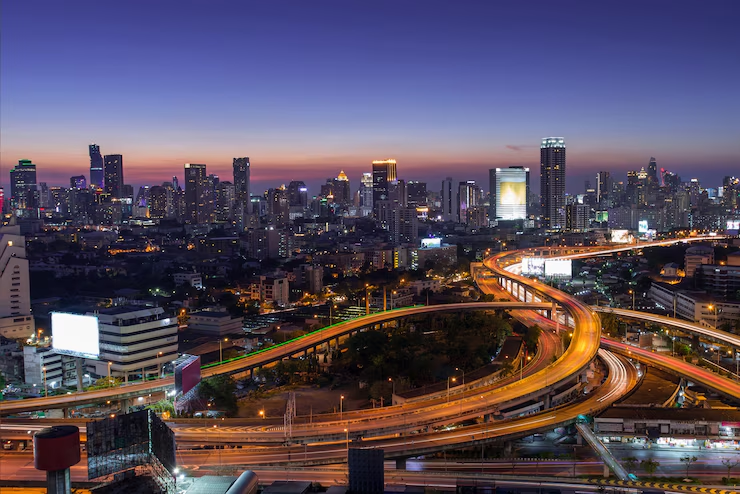

A conexão entre campo e cidade é essencial para o desenvolvimento social, econômico e ambiental do nosso país. Este projeto celebra essa união e destaca a importância da cooperação entre os dois mundos.
🌾 O Valor do Campo
O campo é a base da produção de alimentos e guardião de tradições. A agricultura familiar, as técnicas sustentáveis e o respeito à natureza são pilares para um futuro melhor.

🏙️ A Vida na Cidade
Nas cidades, os produtos do campo se transformam em oportunidades. A cultura urbana, a inovação tecnológica e o consumo consciente também fazem parte dessa história.
🤝 Conexão que Transforma
Quando cidade e campo se apoiam, criamos uma sociedade mais justa, produtiva e sustentável. Vamos valorizar quem planta, colhe, transporta e consome com consciência.